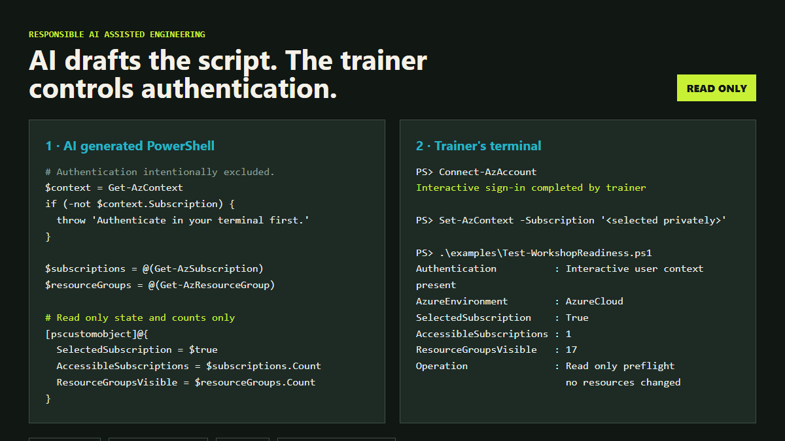

01 · Boundary
Prefer a dedicated training environment
Use a separate training tenant and subscription where possible. Otherwise isolate the workshop and verify that learners cannot enumerate unrelated resources.
Completed September 2026 · AI for social impact
As a Microsoft technical trainer, I usually work with hosted lab platforms such as Skillable. They are valuable at scale, but cost and access can make them impractical for small initiatives. I could not secure internal funding, but I still wanted to work with Maud on the refugee learning initiative. I built a temporary Azure lab so learners could still get hands on experience.
Public implementation guide
A trainer managed lab shifts responsibility from a hosted provider to you. Treat it as temporary infrastructure with real identities, permissions, costs, and data exposure.
01 · Boundary
Use a separate training tenant and subscription where possible. Otherwise isolate the workshop and verify that learners cannot enumerate unrelated resources.
02 · Identity
Choose guests or temporary accounts deliberately. Avoid shared identities, set an expiry, and document how sign in methods and sessions will be revoked.
03 · Authorization
Grant the smallest role at the smallest resource scope. Test management plane visibility and data plane access separately; many Azure services require both.
04 · Authentication
Let AI draft resource logic, but authenticate interactively in your own terminal. Never paste passwords, tokens, device codes, tenant details, or credential files into chat.
05 · Secrets
Use Entra authentication and managed identities where practical. Do not commit generated passwords or distribute one reusable secret to the whole class.
06 · Cost
Estimate compute, disks, AI usage, networking, and idle services. Set budgets, restrict sizes, schedule shutdown, and remember that stopped machines still incur storage costs.
07 · Network
Review public IPs, remote desktop access, firewall rules, and downloads. A short workshop does not make an open endpoint safe.
08 · Learner safety
Use synthetic or approved data, collect no unnecessary personal information, provide accessibility options, and review examples for vulnerable audiences.
09 · Validation
Rehearse sign in, exercises, denial of unrelated access, expiry, recovery, and cleanup through a representative learner account rather than an owner account.
10 · Teardown
Preview cleanup, remove role assignments and identities, delete chargeable resources, and verify that no credentials or learner data remain locally.
Privacy safe evidence
The example uses a real read only preflight against my subscription, but the published evidence shows only state and counts. Account names, tenant IDs, subscription IDs, resource names, tokens, and credentials are excluded.
View the sanitized PowerShell example
The challenge
Skillable and comparable hosted lab services remove a great deal of operational work, but can be expensive or difficult for an individual trainer to access for a small workshop. The alternative should not be a slide only learning experience.
Give trainers a repeatable way to run practical workshops in their own Azure space or a limited subscription, targeting less than USD 100 where cohort size and service choices permit. The refugee programme became the first real implementation.
Learners needed safe access to Azure, Microsoft Foundry, and search services so they could complete the exercises themselves rather than only watch a demonstration.
The environment had to support mixed language and technical experience, isolate unrelated cloud resources, control spend, avoid long lived credentials, and shut down cleanly after the session.
The solution
01
I developed idempotent PowerShell automation for learner identities, virtual machines, policies, role assignments, shared AI resources, and deployment summaries.
02
Learner permissions were restricted to the training resources. Group based access, temporary sign in codes, managed identity, and keyless service connections reduced credential and blast radius risk.
03
VM limits, approved sizes, automatic startup and shutdown, time boxed access, cost tags, and preview first cleanup made the environment temporary by design.
04
The learner guide used short, numbered instructions in English, Turkish, and Arabic, with browser translation, read aloud support, keyboard guidance, and a phone free sign in path.
05
A separate cleanup workflow ran in preview mode by default and removed learner resources without deleting the underlying lab or resource group.
How I used AI
I used AI in VS Code to move faster across unfamiliar Azure surfaces while keeping architecture, security, testing, and delivery decisions under human control.
What I learned
Design for deletion. Temporary training infrastructure needs a tested exit path, not just a deployment path.
Accessibility is architecture. Identity flows, language, device assumptions, and support routes shape the technical design.
AI suggestions need environmental proof. Service availability, permissions, quotas, and licensing must be checked in the real environment.
Keep secrets out of the story. This case study intentionally excludes tenant identifiers, credentials, resource names, and operational files.
The result
The project proved a trainer can create a controlled alternative for a small practical workshop when a hosted lab platform is out of reach. It combined technical training, cloud engineering, accessibility, and responsible AI assisted development, and was completed and documented in September 2026.
For the remainder of FY27, I am ready to support more workshops and can provide temporary learner access where the scope, security review, subscription capacity, and budget make it safe.